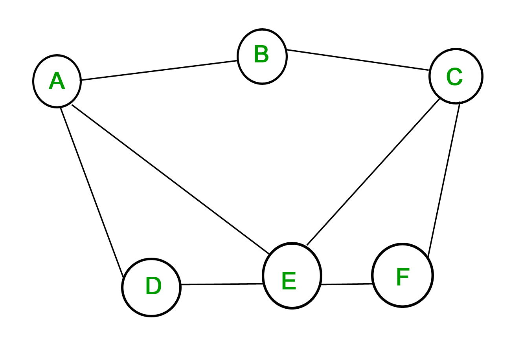
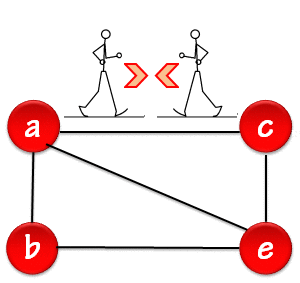

¿QUE ES UN GRAFO?
Es una estructura de datos común que consta de un conjunto finito de nodos (o vértices) y un conjunto de lineas (o aristas) que los conectan; un grafo puede ser finito o infinito.

¿Que es un grafo vacío?
También llamado grafo nulo, es un grafo en el que no hay aristas entre ninguno de sus vértices.
¿Que es un grafo simple?
Es un grafo en el que cada arista conecta 2 vértices diferentes y donde 2 aristas no conectan el mismo par de vértices, es un grafo no dirigido en el que hay como máximo una arista entre cada par de vértices y no hay bucles (Que es una arista desde un vértice hacia sí mismo).

¿Que es un multigrafo o pseudografo?
Es un grafo en el que varias aristas pueden conectar el mismo par de vértices o hay bucles.
¿Que es un grafo bipartito?
Es un grafo G que se puede dividir en dos conjuntos disjuntos, V1 y V2, de tal forma que cada arista del grafo une un vértice V1 a un vértice en V2, pero los vértices de V1 y V2 no pueden ser adyacentes.
GRAFO BIPARTITO COMPLETO
Es un grafo bipartito, todos los vértices del conjunto A están conectados con los vértices del conjunto B.
GRAFO DIRIGIDO
Es un grafo en el que las aristas están dirigidas por flechas, lo que indica la relación representada por la arista, solo se aplica de un vértice al otro, pero no al revés.
GRAFO NO DIRIGIDO
Es un grafo donde los nodos están conectados por aristas bidireccionales (No tiene flechas).

Grado de un vértice
De un grafo no dirigido es el número de aristas que inciden con él, excepto el bucle propio que contribuye dos veces al grado del vértice.
En el caso de grafos dirigidos, el grado se clasifica además como de grado de entrada y de grado de salida.
Secuencia de grado
Es la secuencia de los grados de los vértices del grafo en orden decreciente (De mayor a menor).
 Secuencia de grado de W4= 4,3,3,3
Secuencia de grado de W4= 4,3,3,3
FAMILIAS DE GRAFO SIMPLE
GRAFO COMPLETO
Es un grafo donde un vértice esta conectado con todos los demás vértices.
CICLO
Es un grafo donde cada vértice se conecta solo con su vecino.
RUEDA
Es un grafo similar al ciclo solo que se le agrega un vértice en el medio con el cual todos están conectados.
TEOREMA DE HANDSHAKING (Lema del apretón de manos)
Sea G=(V,E) un grafo no dirigido con e aristas, entonces:

Incluso si hay aristas múltiples y bucles en el grafo; la suma debe dar un numero par.
Para grafos dirigidos se tienen 2 grados, el grado de entrada y el grado de salida, los bucles cuentan de entrada y salida, entonces:
SUBGRAFO
Un subgrafo de un grafo G es un grafo cuyos conjuntos de vértices y aristas son subconjuntos de los de G, si V(H) están incluidos en V(G) y E(H) están incluidos en E(G) se considera un subgrafo, puede ser dirigido o no, en caso de ser dirigido debe conservar la misma dirección que en el grafo original.
SUBGRAFO RECUBRIDOR
Es un subgrafo que debe mantener el mismo número de vértices que el grafo original.
SUBGRAFO INDUCIDO
Es un subgrafo que se obtiene tomando los vértices del grafo G y las aristas que son incidentes.
(Debe conservar las aristas de los vértices que se seleccionen)
GRAFOS COMPLEMENTARIOS
Es un grafo simple no dirigido, el complemento de G se denota G' y contiene los mismos vértices de G y las aristas que en G faltan por conectar.
SECUENCIA DE GRADO DE GRAFO COMPLEMENTARIO: Para hallar la secuencia de grado de un grafo complementario primero se saca la secuencia de grado del grafo G, posteriormente sacamos la secuencia de grado del grafo completo y restamos ambas secuencias de grado y como resultado obtenemos la secuencia de grado del grafo G'.
Ejemplo: Obtener la secuencia de grado del grafo C5
C5={2,2,2,2,2}
Grafo completo: K5={4,4,4,4,4}, se restan ambas secuencias y obtenemos C'5={2,2,2,2,2}
Cada vértice tiene 2 aristas.
GRAFO PLANO
Un grafo plano o multigrafo es plano si podemos dibujar G en el plano de modo que sus aristas se intersectan solo en los vértices de G, es decir dibujar el G sin que las lineas se crucen.
Las áreas que están rodeadas por vértices las llamamos regiones.
TEOREMA: Sea G un grafo simple conexo con e aristas y v vértices, sea r el numero de regiones de una representación plana de G. Entonces, r= e-v+2.
Observaciones: Sea G=(V,E) un grafo plano sin bucles con |v|=v, |E|= e > 2 y r regiones entonces, 3r ≤ 2e y e ≤ 3v - 6 si se cumplen estos criterios puede ser que el grafo sea plano, pero si no cumple alguno de los criterios el grafo no es plano.
CONECTIVIDAD
Si existe un camino entre un par de vértices, es decir, una conexión de aristas por las cuales debo pasar para llegar de un vértice a otro se dice que hay conectividad.
Se utiliza la matriz de adyacencia: MR1⇒ Representa camino de 1 grado
MR2⇒ Representa camino de grado 2, (Se eleva la matriz MR1 al cuadrado).
CAMINOS
Es una secuencia de aristas desde un vértice dado hasta otro vértice. Un conjunto de vértices de V0 a Vn.
CAMINO SIMPLE: Es un camino que no repite aristas.
CAMINO CERRADO O CIRCUITO: Es un camino que empieza en un nodo dado y termina en el mismo nodo, es decir, si empieza en v0 termina en v0; puede repetir vértices y aristas.
LONGITUD DE UN CAMINO: Es el numero de aristas que recorre el camino, un camino de longitud n debe tener n+1 vértices.
GRAFO CONEXO
¿QUE ES UN GRAFO CONEXO? Es aquel que existe un camino entre cada par de nodos o vértices.
¿QUE ES UN GRAFO NO CONEXO? Es aquel en que no existe un camino entre ciertos pares de nodos.
¿QUE ES UN GRAFO DEBILMENTE CONEXO? Un grafo dirigido es débilmente conexo si hay un camino entre cada dos vértices del grafo no dirigido subyacente.
¿QUE ES UN GRAFO FUERTEMENTE CONEXO? Un grafo dirigido es fuertemente conexo si hay un camino de A a B y de B a A para cualquiera dos vértices A y B en el grafo.
GRAFO ACICLICO DIRIGIDO
Es un grafo que no tiene ciclos, un ejemplo de este podría ser un árbol.

REPRESENTACIONES DE GRAFO
MATRIZ DE ADYACENCIA
Es una matriz que representa las conexiones entre pares de vértices, un vértice es adyacente a otro si son vecinos (Es decir, comparten la misma arista).
Ejemplo: Tenemos una matriz de adyacencia donde ponemos un 1 cuando dos vértices son vecinos, a es vecino de b, d, e porque comparten una arista entre si, por lo tanto ponemos 1 en la matriz.

MATRIZ DE INCIDENCIA
Es una matriz binaria de vértices vs. aristas en donde si la arista es incidente con el vértice se marca con un 1, y se utiliza 0 de lo contrario.
LISTA DE ARISTAS
Es una lista de pares de vértices conectados.
{a,b}, {b,d}, {d,c}, {c,a}
EULER
Un circuito de Euler en un grafo G, es un circuito simple que pasa exactamente una vez por cada arista de G.
Regla: Los vértices deben tener grado par para que tenga un circuito de Euler.
Un camino de Euler en G, es un camino simple que pasa exactamente una vez por cada arista.
Regla: Deben haber dos vértices de grado impar, y el resto de grado par para que el grafo tenga un camino de Euler.
Regla general: El grafo puede tener un camino euleriano, pero no un circuito euleriano o viceversa.

HAMILTON
Un camino de Hamilton en un grafo G es un camino simple que pasa exactamente una vez por cada vértice.
Un circuito de Hamilton en un grafo G es un circuito simple que pasa exactamente una vez por cada vértice, inicia y termina en el mismo vértice.
Nota: No se pueden repetir vértices.
Teorema de DIRAC: Sea G un grafo simple con n vértices para n ≥ 3 tal que todos los vértices de G tienen grado mayor o igual que n/2. Entonces, G contiene un circuito hamiltoniano.
Teorema de ORE: Sea G un grafo simple con n vértices para n ≥ 3 tal que S(u) + S(v) ≥ n para cada par de vértices no adyacentes u y v de G. Entonces, G contiene un circuito hamiltoniano.
Aquí podrás encontrar más información sobre teoría de grafos:
https://www.geeksforgeeks.org/mathematics-graph-theory-basics-set-1/?ref=lbp